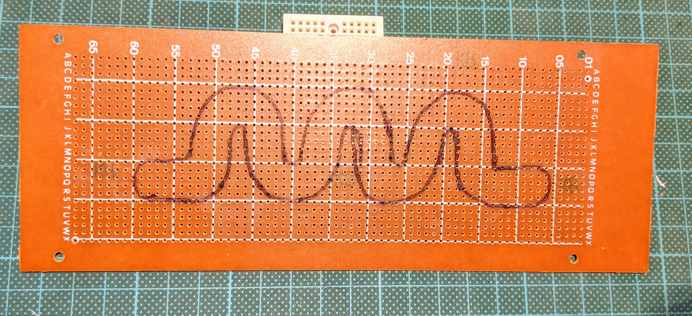
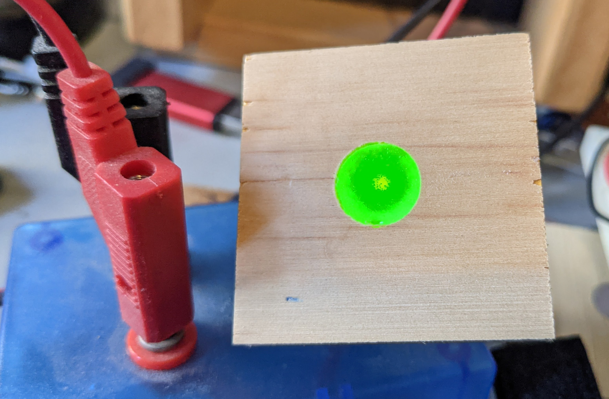
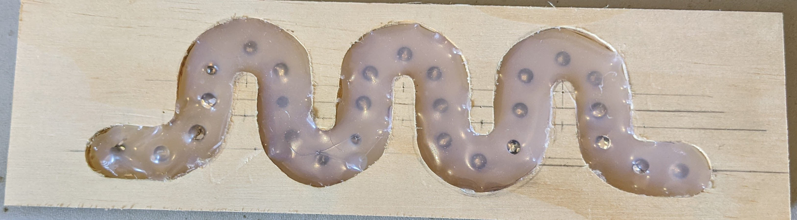
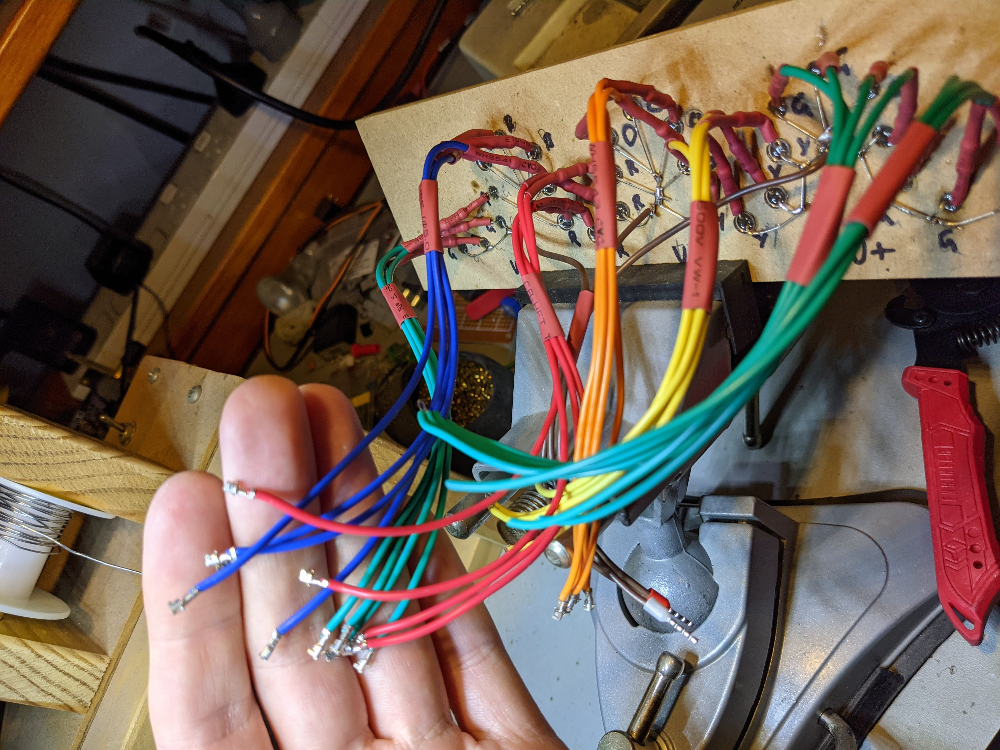
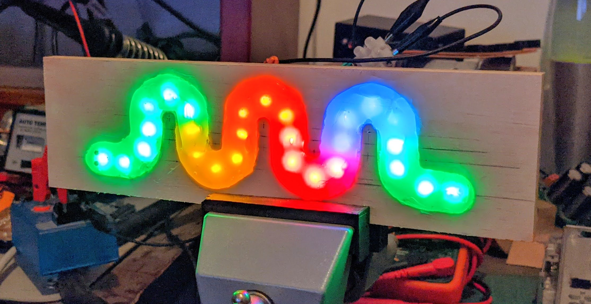
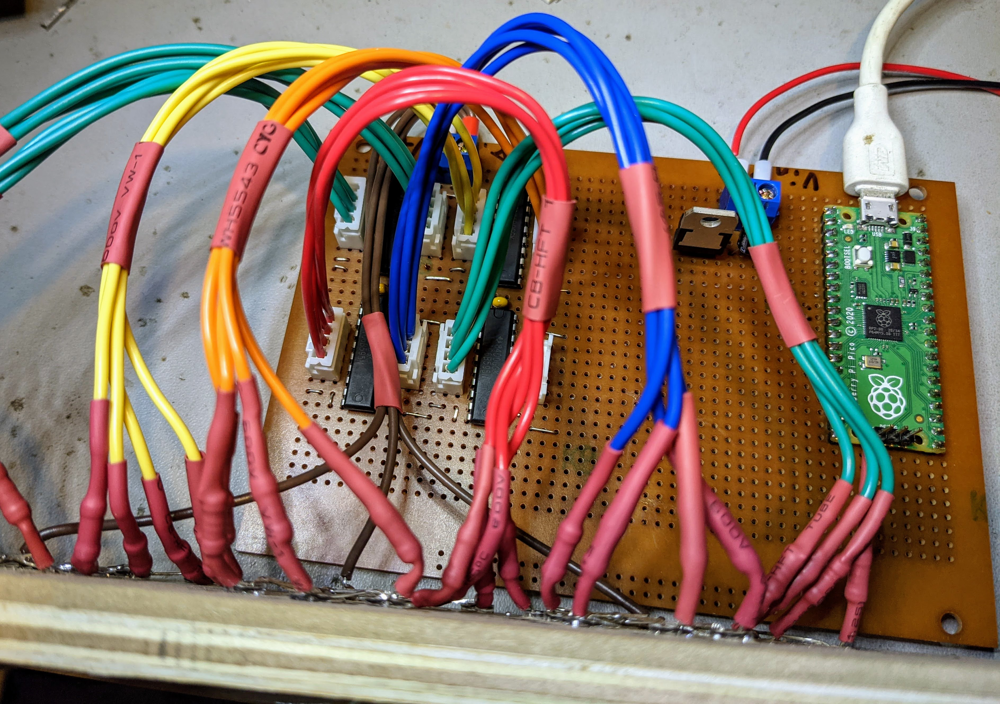
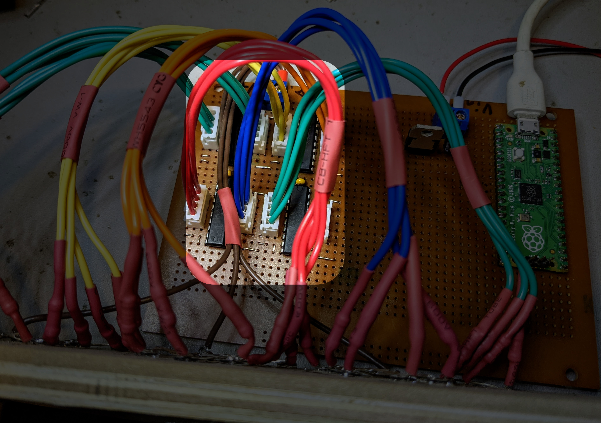
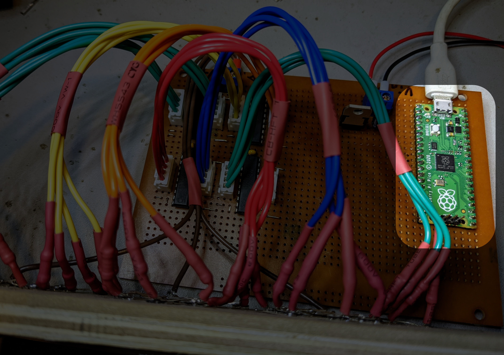
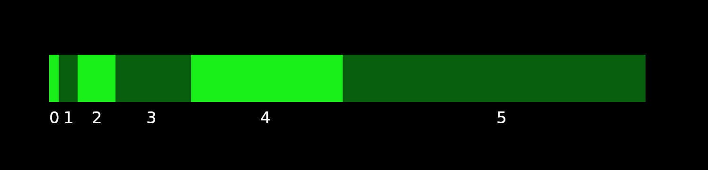

LED Curlyboi
From last PyconAU
Prototyping
Snek Egg
Baby Snek

Final build
Cutout and fill
Wiring...

More wiring...

Crimping
First test
Hardware
s Shift Registers
Raspberry Pi Pico
BAM
Bit Angle Modulation (and other names)
Micropython
Wins
- 🎉 Threading
- 🎉 Animations and Output on separate cores
Limits
- 🏁 Speed
- 🛑 4 bit BAM
Result
Next
Slides/Code
- https://github.com/timsavage/pyconau2021
- https://www.christian-marty.ch/ElectricThings/BitAngleModulation.html